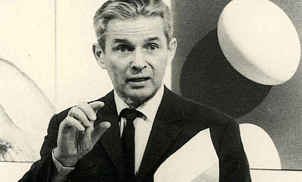

Il étudie le graphisme, le design et l'architecture à l'université et à la Kunstgewerbeschule (École des arts et métiers) de Zurich. En 1934, il s'installe à Zurich comme designer et illustrateur indépendant et ouvre son propre studio en 1936.

Josef Müller-Brockmann
Graphiste Suisse
"Dans mes créations d'affiches, de publicités, de brochures et d'expositions, la subjectivité est supprimée au profit d'une grille géométrique qui détermine la disposition des mots et des images."